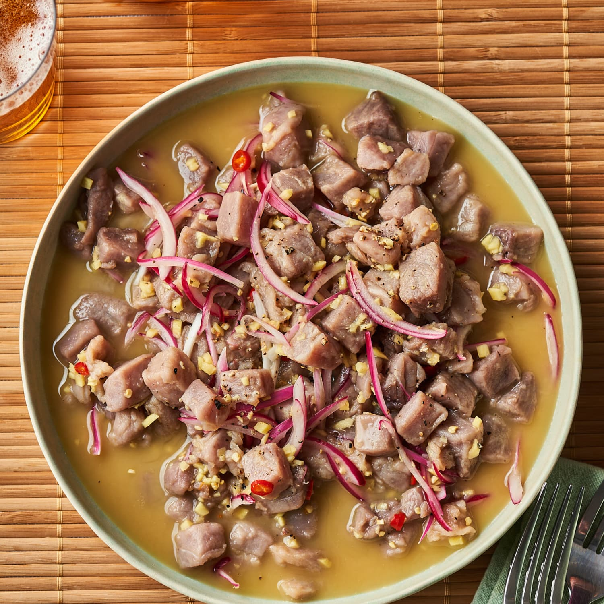

Top 10 Food Delicacies in Visayas |
F O O D L I S T |
Kinilaw A Filipino dish made with fresh fish and vinegar. Kinilaw originates from the Visayan term kilaw, which means "to eat raw" or "to be eaten raw". As an indigenous method of curing seafood or meat with vinegar and acidic juices (such as calamansi or biasong) rather than fire, it belongs to the pre-colonial heritage of coastal communities across the Visayas INGRIDIENTS: Fresh raw seafood with vinegar or sour citrus, ginger, onions, chiles, and salt, often featuring regional touches like tabon-tabon fruit or coconut cream (kakang gata) INSTRUCTIONS: In a large non-reactive bowl, combine tuna, tomatoes, onion, ginger, chiles, vinegar, lemon zest, lemon juice, salt, mango (if using), and coconut milk (if using). Using clean hands or a spoon, gently fold until well combined. Cover and refrigerate for at least 3 minutes and up to 15 minutes.
|